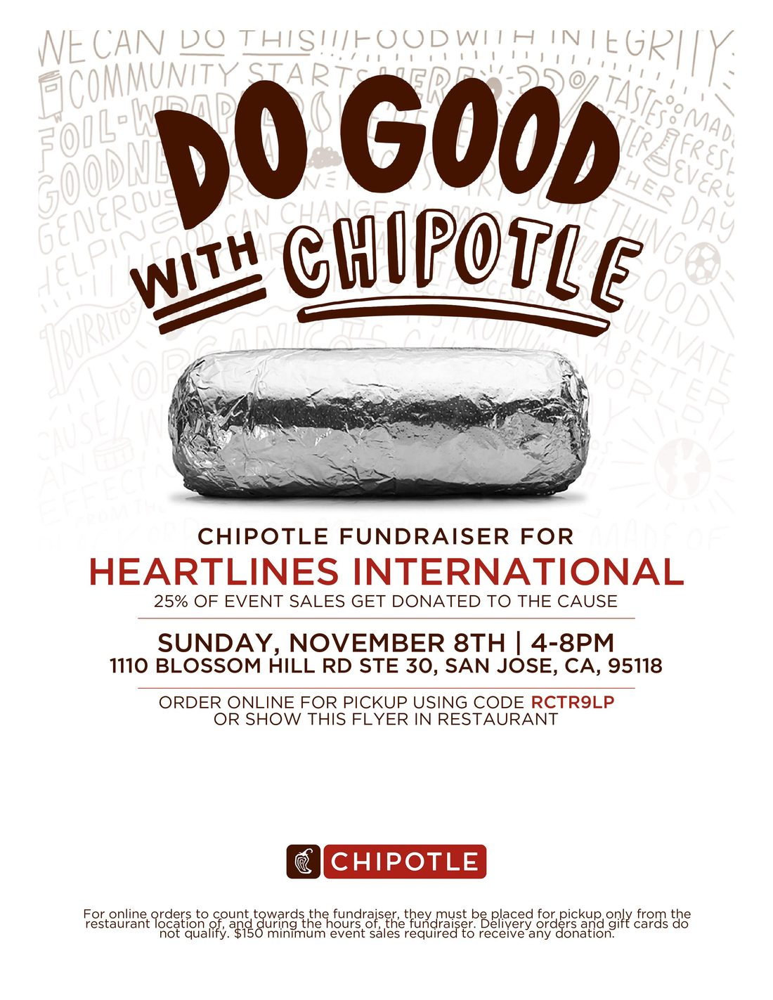
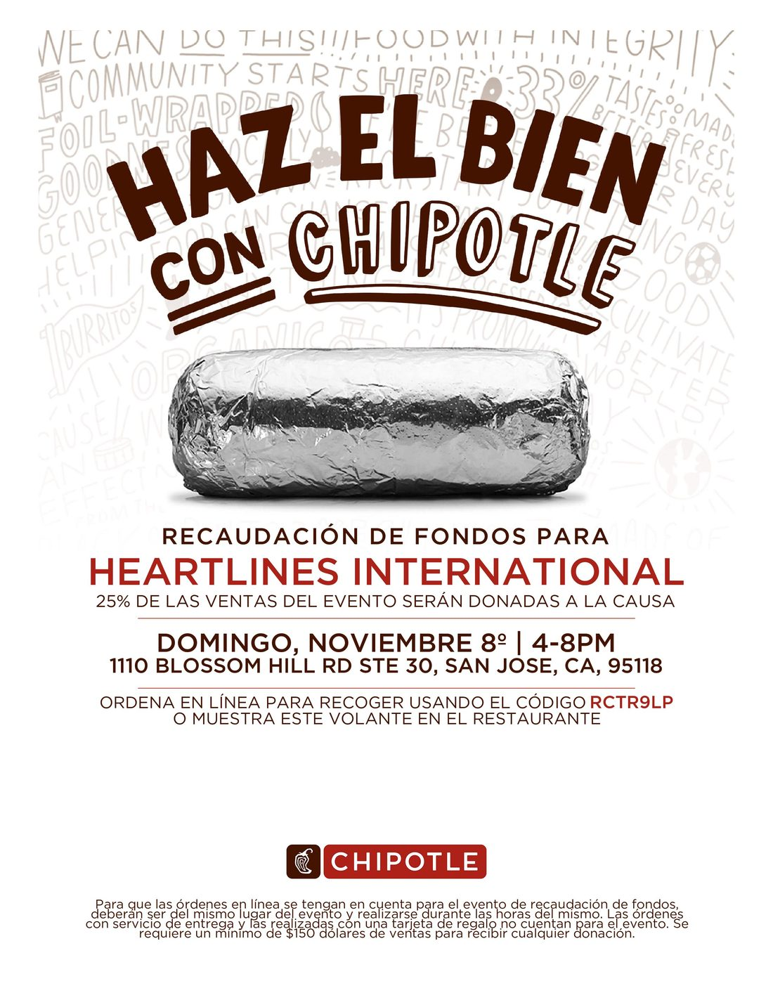
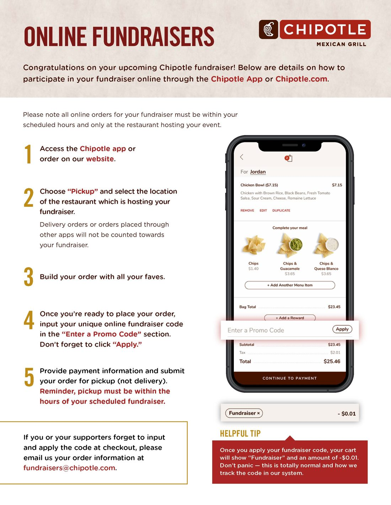
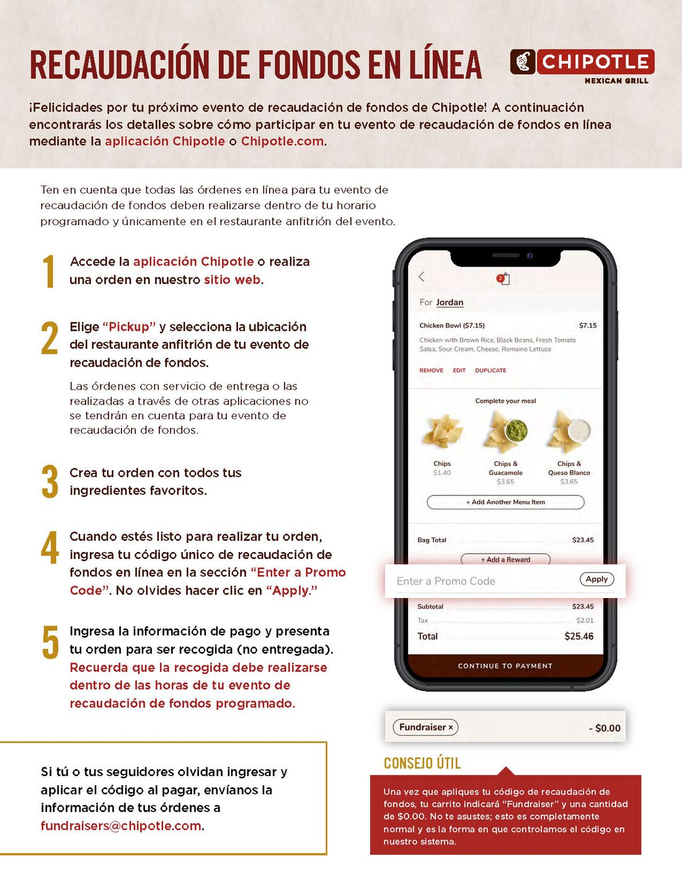

Help us reach the next 100 mothers.
Give, volunteer, or spread the word. Every part of a kit, from the iron tablets to the handwritten card, depends on people like you.
Ways to give
About $7 covers one mother's kit: iron tablets for her pregnancy, two health guides in her language, and a handwritten card.
Give online Fastest
A secure donation page. You can give once or monthly, and 100% of your gift reaches Heartlines International.
Donate onlineGive by check
Make checks payable to “Heartlines International.” Email us for the mailing address.
Email usAsk about a match
Many employers match gifts to 501(c)(3) charities like ours. Ask your employer, or email us and we’ll help.
Ask usHeartlines International is a 501(c)(3) public charity (EIN 42-4681667). Gifts are tax-deductible to the extent allowed by law.
Chipotle fundraiser
Chipotle, 1110 Blossom Hill Rd, Ste 30, San Jose. Chipotle gives 25% of our supporters' sales during the event to Heartlines International. Bring friends, family, your team, your club: every order helps.
In the restaurant
Before you pay, show the flyer on your phone or tell the cashier you're there for the Heartlines International fundraiser.
Order ahead for pickup
In the Chipotle app or on chipotle.com, choose Pickup at the Blossom Hill Rd restaurant, then enter code RCTR9LP under “Enter a Promo Code” and tap Apply. Pick up between 4 and 8 PM on November 8.
What doesn't count
Delivery, orders through other apps, orders on other days or at other locations, and buying gift cards. Paying with a gift card you already have is fine.

Flyer (English, PDF)
Flyer (Español, PDF)
How to order online (PDF)
Cómo ordenar en línea (PDF)Please share the flyer online and with people you know. Chipotle asks that flyers not be handed out to customers in or around the restaurant.
Volunteer
Write cards, help pack kits, or help with outreach. No experience needed: we train every volunteer, including on writing with cultural sensitivity.

Contact us
Questions, partnerships, or volunteering: we'd love to hear from you.